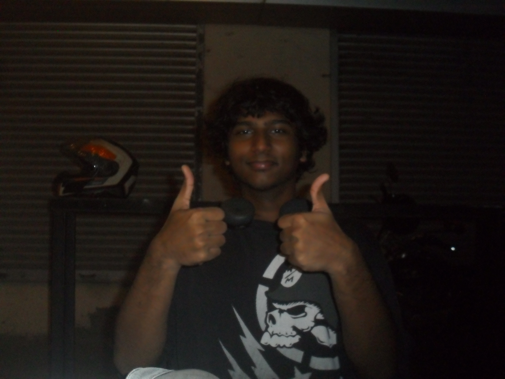

About Me
A snapshot of who I am, what I enjoy building, and where I’m headed.

Who I Am
I am a First Year Computer Engineering student at Fr. Conceicao Rodrigues College of Engineering. I enjoy working with technology that blends logic and creativity, especially in areas like programming, web development, and building useful tools.
What I’m Working Towards
Right now, I’m focused on strengthening my programming fundamentals, creating small but meaningful projects, and exploring how tech and music can work together. In the long run, I want to build reliable software products and continue growing as an engineer and creator.
Interests & Hobbies
- Building small apps and tools for real use cases
- Exploring web development and user interfaces
- Composing and recording music for YouTube
- Experimenting with sound design and creative projects